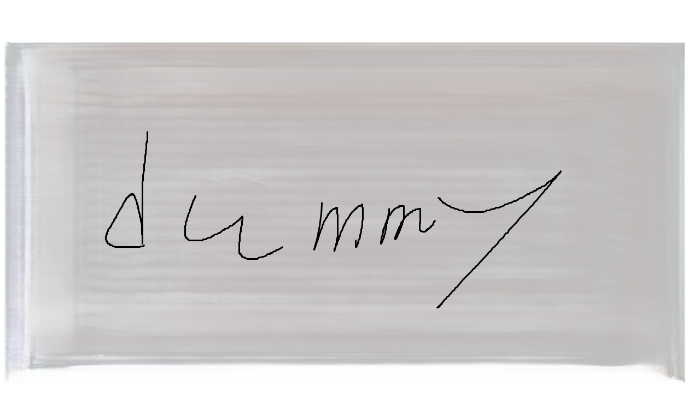
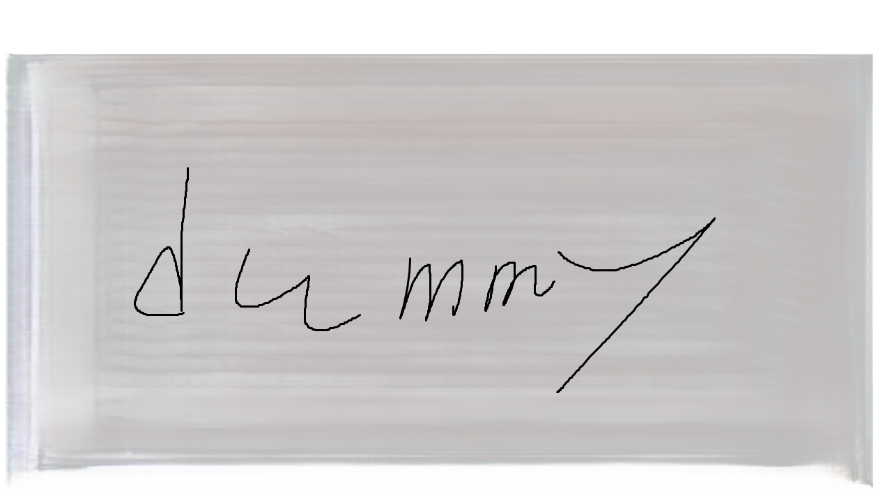

SNS告知謎
このページでは、UNL:OCKが投稿したSNS告知謎をまとめています。
Day1
公開日: 2024年7月1日 | 製作者: UNL:OCKメンバーA
Day 2
公開日: 2024年7月2日 | 製作者: UNL:OCKメンバーB

Day 3
公開日: 2024年7月3日 | 製作者: UNL:OCKメンバーC

このページでは、UNL:OCKが投稿したSNS告知謎をまとめています。
公開日: 2024年7月1日 | 製作者: UNL:OCKメンバーA
公開日: 2024年7月2日 | 製作者: UNL:OCKメンバーB
公開日: 2024年7月3日 | 製作者: UNL:OCKメンバーC